Achievements
2021
2020
2019
2018
2017
Bio
Assalamu Alaikum (May peace be upon you),
I am Mohammad Sabik Irbaz, born and raised in Bangladesh, near the longest sea-beach in the world, Cox’s Bazar. You can call me Sabik. I am an independent Machine Learning (ML) researcher mainly focused on Natural Language Processing (NLP). Currently, I am working as the head course instructor of Applied Data Science and Machine Learning at Amar iSchool, an online educational platform where we empower the ML enthusiasts with a limited background knowledge of Computer Science and Mathematics. I used to work as a Lead Machine Learning Engineer at Omdena Inc. and Pioneer Alpha Ltd..
My current research interests revolve around Natural Language Understanding (NLU), Common Sense Reasoning (CSR), Clinical NLP, Text Style Transfer (TST), Explainabile AI (XAI) and Multidisciplinary applications of AI. I enjoy working with niche ML topics like Active Learning, Lifelong Learning and Data-Centric AI. However, I should concede that sometimes while solving a particular research problem, I explore different approaches (especially the unconventional ones) which are not directly aligned to my research interests. I find this sort of explorations a learning opportunity and also a way to bring in different perspectives to solve problems more efficiently. I got habituated to this sort of problem solving approach during my my 4 years of competitive programming career (2017-2020).
Other than AI, I also like to explore History, Theology, Geopolitics, Psychology, Social Sciences and various STEM, medicine and healthcare-related topics in my leisure. As I consider myself a lifelong student of scientific research and development, I put myself on a ceaseless journey to unravel the mysteries of this convoluted universe so that I can bring positive changes to the world.
Education:
 B.Sc in Computer Science and Engineering, 2021
B.Sc in Computer Science and Engineering, 2021
 Islamic University of Technology, Dhaka, Bangladesh
Islamic University of Technology, Dhaka, Bangladesh
Research Interests:
- Artificial Intelligence
- Deep Learning
- Data Science
- Natural Language Processing
- Computational Social Science
Email: sabikirbaz [at] iut [hyphen] dhaka [dot] edu
Phone: +88016238483732
Address: Baharchara, Cox’s Bazar, Chittagong, Bangladesh
Blogs
2021
Contacts
Email: sabikirbaz [at] iut [hyphen] dhaka [dot] edu
Phone: +88016238483732
Address: Baharchara, Cox’s Bazar, Chittagong, Bangladesh
Experience
Industry Experience
Pioneer Alpha Ltd. , Dhaka, Bangladesh
Lead Machine Learning Engineer
January, 2021 - September, 2021
Omdena Inc. , New York, USA
Lead Machine Learning Engineer
April, 2021 - June, 2021
Nascenia Ltd. , Dhaka, Bangladesh
Software Engineer, Intern
November, 2019 - January 2020
Research Experience
Fordham Human Centered AI Research Lab
Department of CIS, Fordham University
New York, USA
March, 2021 - Present
News
Starting from September 2021
2021
Omdena
My Experience with Omdena Inc.
Assalamualikum everyone,
I have completed an 8-week NLP project with Omdena very recently. This post is intended to get folks to know about the platform and my experience throughout the journey. I am going to break down the post into 4 major parts giving answers to 4 frequently asked questions to anyone who worked with Omdena.
What is Omdena Inc.?
Omdena is a bottom-up collaborative platform to build AI. Let’s break this sentence down into simpler words. Omdena is built on community. When the community gets strong, Omdena gets stronger as a whole and when Omdena gets stronger, it can provide better support to the collaborators. Omdena provides a platform where new startups or non-profit organizations in need of an AI solution can get that in 8-week time. In each project, there 50 collaborators (Data Analysts, ML Engineers, Data Scientists) from different countries all over the world. They grind on the problem for 8 weeks and finally give a collaborative solution. Till now, Omdena has completed 68 projects with 1800+ collaborators from 100 countries. They launch a new project every week. Anyone can look up the challenges on their website.
Recently Omdena launched 25+ local chapters. Here, collaborators from all around the world work on local challenges. These projects are open-source and launched in demand of that local region. Check out Omdena Bangladesh Chapter Here: https://omdena.com/chapters/bangladesh/
How do things work in Omdena?
If you are interested to join Omdena’s collaborator platform, you need to apply to a project on their website (https://omdena.com/projects/#our_challenges). They have a big queue of applicants waiting so you might need to wait for a long time. In my case, they connected with me 3-4 months later I applied. I even forgot that I applied there. Later I understood that they have a referral program where you need to apply with referral codes from previous collaborators. The application with referral codes gets priority and takes less time probably 2-3 weeks. I will share my referral code at the end of this post so that anyone interested in this group can join.
After your application is reviewed and accepted by Omdena, you need to go through an interview round on Skype. This round is basically to validate what you wrote in the application and also if you can actually collaborate with 49 other members in the group. After the interview, they notify you if you are selected for a project. After that, you are requested to join a slack channel and great things start here.
Another thing to mention here is that Omdena’s policy with collaborators is called do-ocracy which means if you are inactive without any reason they will remove you from the project and you need to apply again to work in any future projects. However, they give an alert one week earlier so that you can start being active or they can check if you are really inactive. Nobody asks anyone to do anything. Activity is measured based on GitHub pull requests, participation in slack channels, participation in weekly meetings, and some other things with the clients. You can know more about the community tier here: https://omdena.com/community-tiers/
What exactly did I do there?
Our client was Equilo( https://www.equilo.io/ ).
This is the project I worked on: https://omdena.com/projects/ai-gender-equality/
Technologies used:
- Web Scraping (more than 10 websites)
- Dataflow, Cloud SQL, GCS, App Engine, Firestore
- Django, React Js
- Natural Language Processing
- StreamLit
Problem statement: Build a system to understand gender inequality in organizations by analyzing company reviews and recommend actions to prevent them.
My Experience:
The first day I joined the slack channel, I was completely lost. However, as time passed, things started to get clear. To tackle the problem, tasks originate organically. For example, a task might handle web scraping, another task might handle deployment, and so on. The tasks are also originated by the collaborators so everything is self-supervised. In my project, there were 50 collaborators from 20 different countries. And at the end of the project, there were 7 tasks in total tackling the whole process. For each task, there should be a task leader from the collaborators who is responsible to see the end of that particular task. I was active throughout the challenge though it was a bit tough for me to manage time as I was already doing a full-time job at Pioneer Alpha, a part-time job at Amar iSchool, and also some independent research work. But somehow the Almighty gave me the strength to grind, thrive, and survive, and alhamdulillah I did survive. In these 7 tasks, I had major contributions in 4 of them. I was the task leader of 2 of these tasks. One of my task teams worked on building the recommender system for organizations with low gender equality scores. Another task team worked on building the web app and deploying the whole data and machine learning pipeline to Google Cloud Platform. As a task leader, I had to present the progress of that task every week in client meetings.
The most important experience for me is that I made friends from different parts of the world. Now, I have friends from Calcutta, Chennai, Egypt, Australia, and so on. I was the only Bangladeshi in that project. Even though we spoke in English during all the meetings, I had a full-Bangla meeting with the Calcutta guys and a full-Hindi meeting with the Indian guys. I got to know that countries can be different but programmers are the same. They face the same struggles, rant about the same things, and when they unite with their wits and expertise they can face any sort of problems.
Do I recommend others to work with Omdena?
If you can single out the spare time of 10-15 hours a week from your study or full-time job, I would recommend that you should apply and work on the projects and learn how to grind on problems as a community. This is a big learning opportunity for anyone. If you do not have that, then you should not apply since Omdena works on do-ocracy as I have said earlier.
Here’s my referral code: 5EGJUYKVU0BIM6
Feel free to use this while applying through this link: https://omdena.com/referrals/
Thanks a lot to Omdena for everything.
#machinelearning #deeplearning #NLP #MLOps
Token of Appreciation from Omdena
LinkedIn Declaration Post
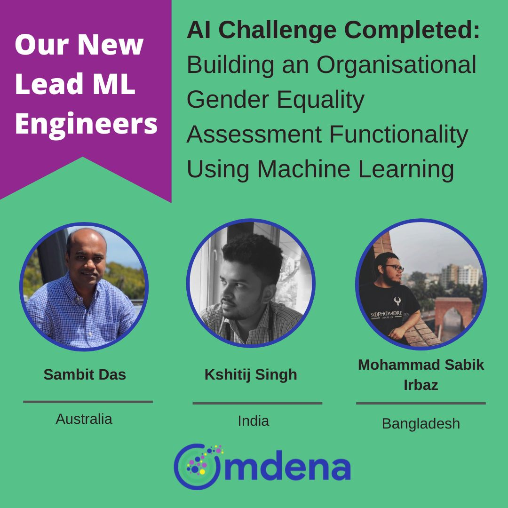
Official Certificate of Achievement
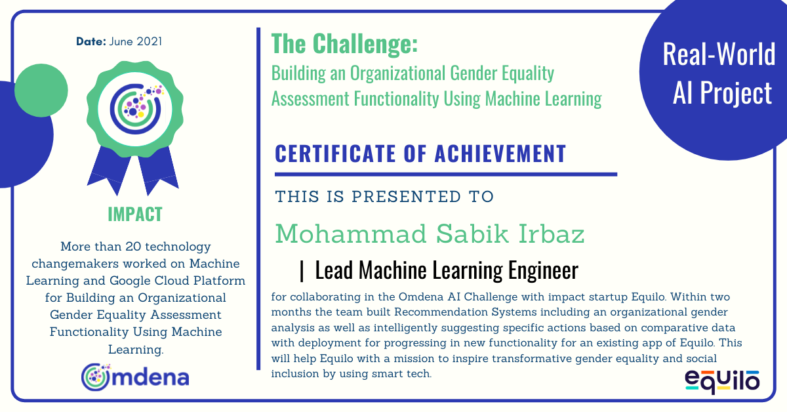
Projects
Please read this before going through the projects.
I could not link the source code to some of the projects below due to client confidentiality or lab confidentiality. Everything related to a particular project is not described to the full extent here. I only discussed the motivation (why and how I or my team started working on this problem), problem statement (what the problem is/was in short), approach (not the formal version, just how I or my team approached the problem), results (final outcome) and my contribution (what exactly I did). If you like any project below feel free to explore the GitHub repository and, if the link to the repository is not provided here, feel free to contact me for more details.
Adobe Premiere Plugin for Automated Video Editing
Timeline: July 2021 - October 2021
Motivation: This was a client project during my time at Pioneer Alpha. My colleague for this project was Fahim Rahman.
Problem Statement: Given some family photos and videos of their family events like weddings, we need to return the portion of the videos where the family members appear and also the appearance stats.
Approach: We already had a face detection system up and running. We used the same system to detect the faces and then cropped the detected portions to generate thumbnails. For the latter part, we ran a frame-by-frame recognition and kept a count of the face stats on the way. We also kept track of which face appeared when. The consecutive timelines were merged and used as a range to crop the videos automatically. The timeline was sent back to the remote user. The main challenge of this project was to integrate the machine learning pipeline with the Adobe Premiere Plugin in real-time. We were able to face the challenges, complete the project and deliver the project successfully to the client.
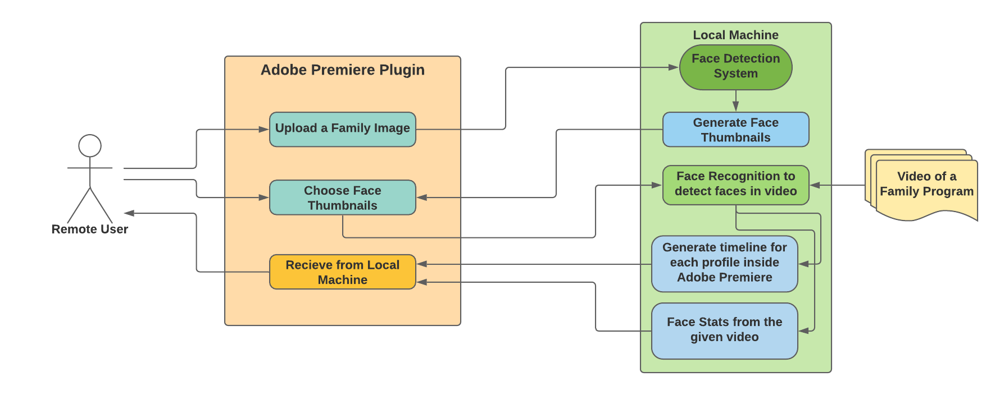
Results: The result snippets are not provided here due to client confidentiality.
My Contribution: I worked on the local machine part of this project while my other colleague worked on the plugin part..
|
Timeline: April 2021 - Present
Motivation: I have scourged through many online sources and lectures to understand the logic behind Transfromers by Vaswani et. al. Using theHuggingFace Transformers and understanding what is happening underneath is not the same. So, I set two goals for this project (1) Understanding and documenting a brief summary of the transformers architecture clearly, (2) Use the transformer architecture for machine translation.
Approach: I went through different sources and compiled the ones which are comprehensive and easily tractable. Then I wrote a brief summary of what I understood. I also built all the architectural diagram from scratch because I believe this process forces us to look into things more critically. I also reimplemented the whole thing using PyTorch.
Results: As for now, the first part of the project is done. And the second part is work in progress.
My Contribution: This is my solo learning project.
Detailed Report
GitHub Repo
Walkthrough
|
Omdena Equilo Project
Timeline: April 2021 - June 2021
Motivation: I got selected for Omdena Equilo Project after an interview. Back then, most of my NLP knowledge was theoretical or on a small or mid scale project. I wanted to learn how things work on a large scale projects. Besides, the problem was interesting. More about the project can be found in my Omdena Blog.
Results: In summary, we built a pipeline to systematically understand the gender inequality in organizations and recommend actions to prevent them.
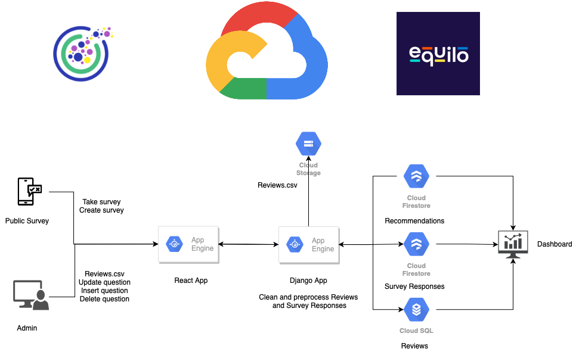
Detailed Report
|
COVID-19 Public Policy Stance Analysis
Timeline: March 2021 - Present
Motivation: Dr. Ruhul Amin from Fordham University had an opening in his lab, Fordham Human Centered AI Research Lab, for this project. The problem seemed really interesting to me and I reached out to him. After a brief interview, we started working on the problem. As the project progressed, we have two more awesome collaborators, Dr. Ashique Khudabukhsh and Rupak Sarkar. I am learning a lot working with them.
Problem Statement: Is it possible to analyze the public stance on COVID-19 policies and the implications of it?
Since this is a work in progress, the details will be here after the completion of the project.
|
End-to-End Natural Language Understanding Pipeline for Conversational Agents
Timeline: March 2021 - September 2021
Motivation: I got the opportunity to supervise this project during my time at Pioneer Alpha and I gladly took the opportunity as this project dealt with NLU in low-resource language like Bangla. NLU itself is a challenging NLP domain when a low-resource language is added it gets more challenging. The client of this project was Amar iSchool and my other two amazingly gifted collaborators were Fahim Shahriar Khan and Mueeze Al Mushabbir.
Problem Statement: Using low-resource and skewed Bangla dataset for intent recognition and entity extraction, can we build an end-to-end multi-lingual (Bangla, Bangla Transliteration in English and English) conversational agent which can receive messages and send responses seamlessly as a Business Assistant for any business in Bangladesh?
Approach: For this project, we had to work on the whole machine learning pipeline from Data Collection, Data Cleaning, ML Modeling to Deployment. We got a list of FAQs and their relevant answer from Amar iSchool employees. These FAQs were further analyzed, verified and annotated with entity and intent by our data analysts. We fine-tuned the DIET architecture on out dataset. For the whole process we used the Rasa Open Source Framework which also helped us achieve real-time performance through seamless processing. We also built a web app for the end-to-end interaction which will be used as a service provider for Bangladeshi clients.
Results:
Our work was accepted in IEEE ICMLA 2021 for oral presentation and based on this work we reached the final round of AI For Bangla Challenge 2021.
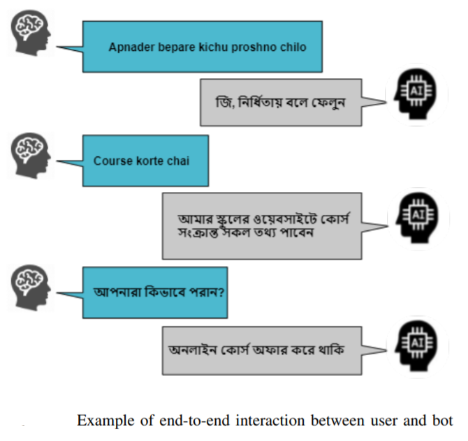
My Contribution: I was the supervisor of this project.
Detailed Report
|
Real-time Bangla License Plate Recognition System for Low Resource Video-based Applications
Timeline: March 2021 - October 2021
Motivation: I was introduced to this project during my time at Pioneer Alpha Ltd. I always look for opportunities to contribute to low resource and real-time research especially in my native language because these types of projects have a direct impact on society. Luckily I was appointed as the supervisor of this project. I had the opportunity to supervise two of my amazingly talented colleagues, Alif Ashrafee and Akib Mohammed Khan, throughout the project.
Problem Statement: Given a video feed of cars and motorcycles having Bangla license plates, can we teach the machine to identify and recognize license plate text?
Approach: First of all, we collected necessary data. We compiled two types of datasets. One was images containing Bangla License Plates across Dhaka City and another was of videos from all over Bangladesh containing license plates. Thanks to the amazing Amar iSchool volunteers who helped us in this process. We used the image dataset for training and the video dataset was used for testing. Then, we manually drew bounding boxes of the images to train a license plate detector model. But all the models we were training were not achieving real-time inference speed. So, we used a weak binary classifier model trained on negative and positive samples of license plates as a wakeup mechanism which was used to invoke the bigger model. After this, there were two more stages that finally resulted in successful recognition. Our final pipeline (Cascade + SSDv2 + Vision API) achieved real-time speed with high accuracy. We also built a web app for the interaction which will be used as a service provider for Bangladeshi clients.
Results: We presented our work in BIM 2021.
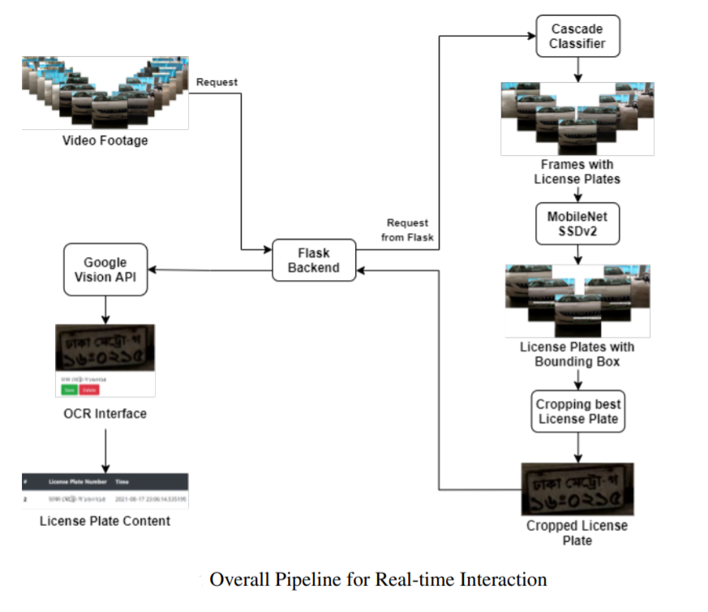
My Contribution: I was the supervisor of this project.
Detailed Report
|
Anime vs Animation vs CGI
Timeline: March 2021 - April 2021
Motivation: Back in 2020, I used to be a weeb (someone who always watches and keeps tabs on Japanese animes). There is a common debate among weebs and anime haters. Anime haters see animes as mere animation nothing special. Though by March 2021 I stopped watching animes and all other types of fictional shows, I wanted to put an end to this debate using logic and machine learning.
Problem Statement: Given a frame from fictional shows, can the machine identify the difference between anime, animation and CGI scenes.
Approach: I gathered data from google images using keywords and scraping techniques. The images went through preprocessing, augmentation and cleaning process. The fastai library made many of these tasks very easy to conduct. For training, I fine-tuned a Resnet-50 model pretrained on ImageNet and at the end of the experiments achieved 80% accuracy. I also made a simple web-app for interactive interface.
Results:
After this experiment, the debate should exist no more. Yes, they are very different in style.
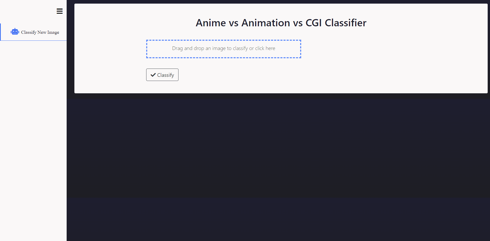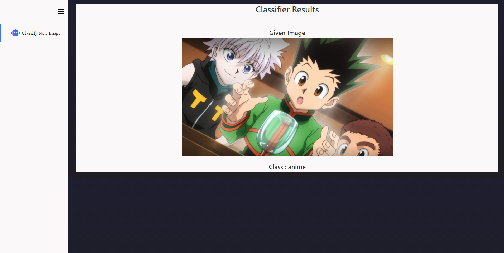
My Contribution: This was my solo project.
Detailed Report
GitHub Repo
Walkthrough
|
Real-Time Face Recognition System for Remote Employee Tracking
Timeline: January 2021 - February 2021
Motivation: The starting of this project was from a client project on Face Recognition during my time in Pioneer Alpha Ltd. The client project got extended to a research project later due to the scope and range this project covers.
Problem Statement: Is it possible to build a real-time face recognition system to track the presence of remote employees?
Approach: The face recognition module is trained on Labeled Faces in the Wild (LFW) dataset because most of the cameras of remote employees are of low quality and LFW covers a diversified range of faces in the wild. Whenever new employees joins a company, they are assigned an unique random ID containing 2 letters in the beginning and 4 digits in the end. When employees start their session, the camera captures the video in random time frames to check if the employee is actually there. The record is stored in archive history which even the admin cannot change. This is done to maintain fairness.
Results:
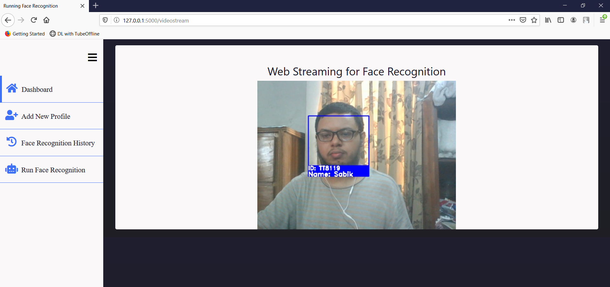
My Contribution: I worked on the whole implementation process while my other teammates helped me with organization process.
Detailed Report
|
Automatic Radiology Report Generation
Timeline: January 2021 - Present
Motivation: From the beginning of 2020, we are in a pandemic situation. The condition is much worse in 3rd world countries like Bangladesh. I and my friend, Abir Azad, were trying to contribute somehow to the case. We found out that most of the diagnosis reports come out late because of human latency. There are much more patients than doctors, nurses, and health workers. We were looking to contribute to automatic diagnosis report generation research and found MIMIC-CXR dataset by Johnson et. al. dealing with radiology report generation. We presented this issue to our Pattern Recognition project supervisor, Sabbir Ahmed. Under his supervision, we started working on this problem.
Problem Statement: Given an X-Ray image can the machine learn to understand and generate a medical report from it?
Approach: To get access to the database, we needed to pass CITI certification test so that someone using the dataset understand the implications and ethics of using it. After that, we were given access by the database moderators. The dataset was challenging and required a huge understanding of details. We analyzed and process the dataset but could not use the full version because of hardware deficiencies. For generation task, we used Vision Transformer by Dosovitskiy et. al. as an encoder to understand the X-Ray images. and Transformer Decoder for generation task. Our intuition behind using Vision Transformer(ViT) was that ViT divides images into patches that might recognize better localized spatial structure which is necessary for X-Ray images. Our whole system was end-to-end.
Results:
Point to be noted :: This project is still a work in progress. The results shown below are on our baseline approach.
We are working with our supervisor for better explainable results.
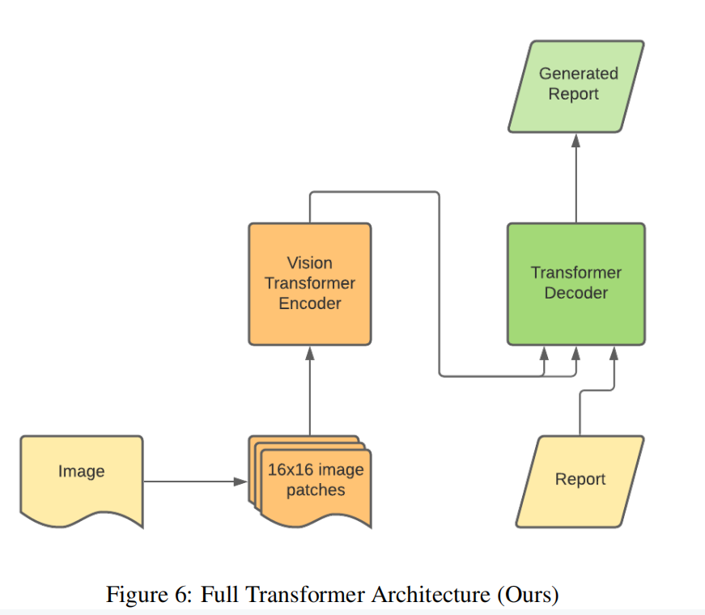
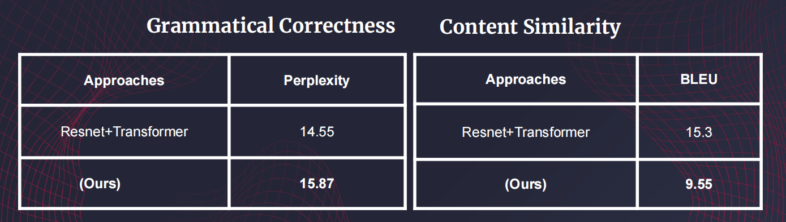
My Contribution: I am working on the model architecture and how to make the results explainable.
Detailed Report
Walkthrough
|
Medical Expertise Style Transfer System for Layman Patients
Timeline: October 2020 - Present
Motivation: There is always a big communication gap between experts and laymen in any domain. In the medical domain, this problem is considered high stakes because patients who are not experts need to understand what the doctor prescribes them. Moreover, this problem is not localized, it is worldwide. For our undergraduate dissertation, I and my teammates conducted research on expertise style transfer in the medical domain upon discussion with our supervisor, Dr. Kamrul Hasan.
Problem Statement: Given an expert style text can the machine learn to transfer it into layman style preserving the content?
Approach: We started exploring the most recent Medical Expertise Style Transfer dataset, MSD Dataset, by Cao et. al. We came up with an approach like "Fill in The Blanks". Using an expertise classifier, we were masking expert words. Using a language model finetuned on laymen corpus, we were filling the gaps with the most relevant words. This method gave up competitive performance but not the best. We are currently looking into a data-centric active learning approach to make this task more tractable and efficient.
Results:
Point to be noted :: This project is still a work in progress.
The results shown below are on our previous "Fill in the Blanks" approach.
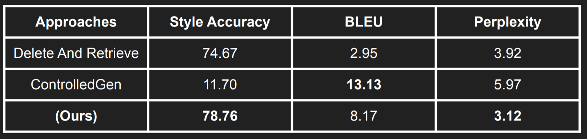
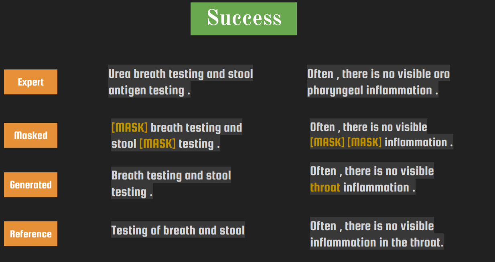
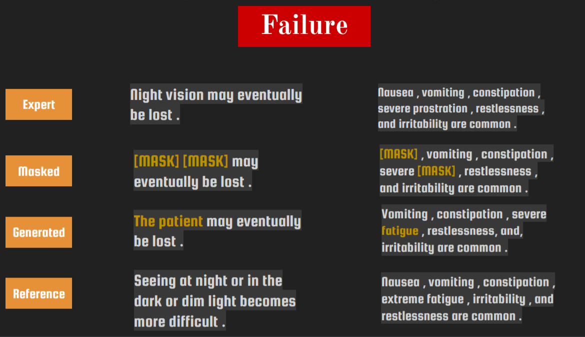
My Contribution: I am mainly working on the active learning data-centric pipeline.
Detailed Report
GitHub Repo
Walkthrough
|
Multimodal Multi-label Genre Classifier
Timeline: August 2020 - September 2020
Motivation: I used to watch a lot of movies and series back then and I was a regular at IMDb. I used to read layman and critic reviews, sometimes write constructive reviews myself, read plot summaries, and sometimes write the plot summaries if the summaries were not present there. One day, I noticed that we can infer the genres just by reading the plot summaries most of the time. From this intuition, I and some of my friends started exploring this. After exploring, we found out that sometimes the title poster can be also useful for this. For example, we cannot infer if a movie is of 'Animation' genre just by reading the plot. To investigate this further, we discussed the finding with our project supervisor of the Machine Learning course, Professor Hasan Mahmud. We finalized this topic as our term course project.
Problem Statement: Given a title poster and plot summary of a movie or series, can machine identify the genres with high accuracy?
Approach: First of all, we collected a list of movies and series and their corresponding IMDb URLs from a verified IMDb list. Using the URLs, we scraped the title posters and plot summaries. We worked on 3 types of models in total. For the image modality we used Resnet-50 pretrained on ImageNet and For the text modality we used Bi-LSTM (UMLFit) pretrained on Wikipidea. To find out if using both modalities really make any difference, we fine-tuned Resnet-50 only on the posters, Bi-LSTM on the plot summary and custom Model (Resnet-50 + BiLSTM) was on both modalities. We used accuracy and F1-score (because of imbalanced class problem) as metric.
Results:
Resnet-50 was fine-tuned only on the posters, LSTM was fine-tuned on the plot summary. Custom Model (Resnet-50 + BiLSTM) was trained on both modalities.
From here, we can come to two conclusion (1) the genres can be inferred from plot summaries (2) using image modality here can boost the performance.
 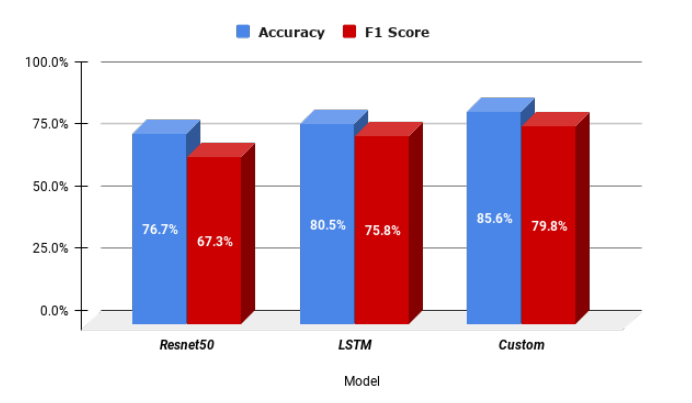
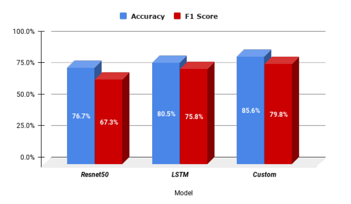
My Contribution: I worked on all parts of the whole project. As it was a team-work, my main focus was on designing and training the machine learning models while my teammates focused on other parts.
Detailed Report
GitHub Repo
|
Second Nurse Care Activity Recognition Challenge 2020
Timeline: June 2020 - September 2020
Motivation: After the completion of our Gesture Recognition project, we (me and my teammate Abir Azad) were acquainted with sensor data. And by this time, we also completed the online course on Machine Learning and Deep Learning by Andrew Ng. We had the basic knowledge of machine learning but we did not have enough practical knowledge. Since we were acquainted with ML and accelerometer data, Professor Lota recruited us in her team of participants in the Second Nurse Care Activity Recognition Challenge 2020. Our team name was Moonshot_BD
Problem Statement: Given the sensor data from accelerometer with time used by nurses in elder care homes and the manual timetable of different activities by the nurses, is it possible to automate the time-tracking process with high efficiency.
Approach: The challenge provided us with two raw datasets. One dataset was containing the accelerometer data (x,y,z-axis) with day and time used by the nurses. Another one contained the start and end of an activity. The dataset was imbalanced and small. First of all, we merged using the start and end times of the second dataset. The resulted dataset contained the accelerometer data (x,y,z-axis) and the activity labels. Then we extracted different features from the data. We trained our models using the features. Since the data was small, we only tried out traditional machine learning models like KNNs, Naive Bayes, Random Forest, SVM, and basic MLP. Our intuition behind not using more parameterized models was that the model might overfit. And since we just had one chance to submit the results, we did not take the chance. When the result got published our suspicion was correct. Our basic MLP won the challenge leaving behind several overly parameterized models. Later we published and presented our work in UbiComp/ISWC HASCA 2020.
Results: Result Announcement Link
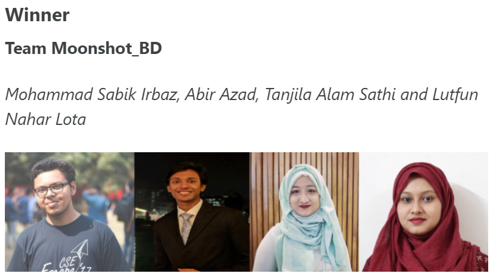
My Contribution: I worked on all parts of the whole project. But my main focus was on training and testing the machine learning models.
Detailed Report
GitHub Repo
|
Gesture Recognition using Myo Band
Timeline: January 2019 - May 2019
Motivation: The lab I was primarily affiliated with during my undergrad, SSL Lab, has a long-term project in hand to build automated wheelchairs for semi-paralyzed patients. This project deals with many complicated real-life engineering challenges. The head of SSL Lab, Dr. Kamrul Hasan, formulated a sub-problem of this project which was to map the hand gestures with computer keys, and my team with under the supervision of Professor Hasan came up with a solution to solve this problem.
Problem Statement: Can we map different hand gestures with computer keys and leverage them to automate human-computer interaction?
Approach: One way to automate the process is to somehow map the muscle movements with computer keys. First of all, we looked into different sensors which can extract the signal from hand muscle movements. The most efficient one was Myo Band. Using the Myo Band, we analyzed the difference in signal distribution for muscle movements of different gestures. We trained a basic MLP using the signals as input and the gestures as labels and the performance were satisfactory. Back then, we were not acquainted with procedures of comparing baselines and related works. Now the challenge was to map the output of the trained MLP with computer keys. We were trying out different methods by none of them were working properly. Then, we got introduced to an open-source library named PyAutoGUI which helped us solve the final challenge. Finally, we could use all the keys of the keyboard with hand gestures. And, we played the dinosaur game in Google Chrome when there is no internet connection.
Results: Video Link
 
My Contribution: Honestly, my contribution in this project compared to my best friend and teammate, Abir Azad, is very little. But I am mentioning this project here because this was my first encounter with research and machine learning which turned out to be my main career focus later. I got to learn many things from this project. Moreover, this project brought my focus back to academia as I could see there are many interesting and challenging real-life problems to be solved.
*Detailed report can be found here.* (This was my first academic project report. So please bear with our amateur inconsistencies and errors.)
|
Publications
Updated list on Google Scholar
2021
2020
Talks
2021